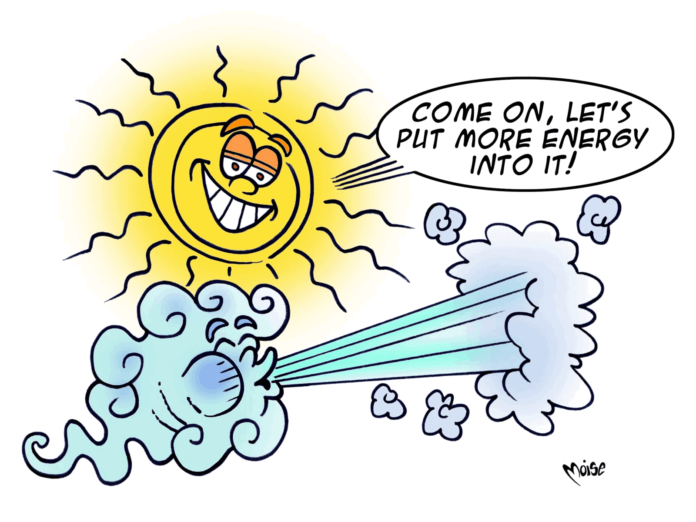

Energy sources can be renewable and non-renewable.
Energy from non-renewable sources comes from fossil fuels (gas, coal, oil) which will eventually be used up and from the fission of uranium atoms (nuclear energy), whereas renewable sources comes from the sun, wind, tides and sea currents, as well as from waterfalls (which produce hydroelectricity), geothermal sources and biomasses. On a human time-scale, renewable energies will never be used up (solar energy) or they will regenerate themselves at least as fast as the speed at which they are used (energy from biomasses).
Some energy plants use sources classed as equivalent to renewables, as they manage to recover energy that would otherwise be dispersed. For example, technologies like cogeneration allow us to recover the heat generated in a thermo-electrical plant to produce electricity. It can then be transported to individual homes via district heating networks.
Today, emissions generated by fossil fuels are one of the main causes of atmospheric pollution and of the greenhouse effect. This is why, for the sake of sustainability, the use of renewable or equivalent sources should be increased if we are to positively contribute to protecting our environment.